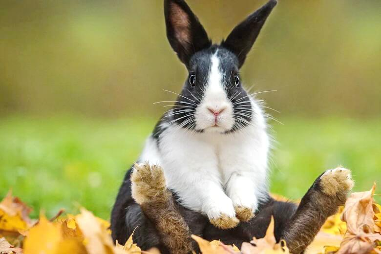

El Maltrato en la isla:
Uno de los problemas sociales más grandes de Puerto Rico y quizá del mundo entero es el maltrato animal. Aunque es normal ver que nuestros vecinos, amigos y familiares ya tienen una mascota; para el 2019 se estimaba un total 300,000 perros y más de 500,000 gatos abandonados en las calles. Es triste cuando se toma consciencia de que el abandono y, por lo tanto, el maltrato animal, es algo que está normalizado en la isla.
Creo que cada persona habrá visto, aunque sea, a un animal en la calle, un animal herido, habrá conocido a alguien que no cuida muy bien de su mascota, etc. Todos estos son casos de maltrato animal. Según méxicosocial.org, el maltrato animal se define como “el comportamiento irracional de una persona hacia un animal con la finalidad de causarle sufrimiento, estrés o incluso la muerte” sin embargo, este puede ser también de manera indirecta. Cuando no haces la búsqueda apropiada de cómo cuidar a tu animalito o no le das mucha atención, estarás maltratándole aunque no lo sepas. En Puerto Rico el maltrato animal fue prohibido por la Ley Núm. 154 el 4 de agosto de 2008, según enmendada, y conocida como Ley para el Bienestar y la Protección de los Animales, y dicha ley penaliza el maltrato de animales. Esto no ha hecho que se detenga, pero al menos al denunciar podemos hacer justicia por todos esos animales que han sufrido.

Tipos de maltrato:
Existen varios tipos de maltrato. Muchos de ellos son conocidos, mientras que nos mantenemos un poco más desinformados de otros. Aún así, todos estos tipos son sumamente graves y no deberían ser normalizados.
- Negligencia: No proveerle al animal sus necesidades básicas.
- Sobreexplotación: Utilizar al animal excesivamente en circos, granjas, caza, etc., mientras se es consciente del daño que sufre y del estado del animal.
- Testeo con animales: Probar productos (perfumes, detergentes, maquillaje, etc.) en animales con vida para ver sus reacciones.
- Abandono de un animal y abuso sexual.
- Maltrato físico y maltrato emocional: Conductas violentas hacia el animal que causan daños visibles y/o mentales.

Ayuda a prevenirlo:
Si te gustaría intentar prevenir el maltrato y el abuso de animales, a continuación, hablaré de unas cuantas acciones que pueden ayudarte.
- Una dieta consciente:
Puedes disminuir el consumo de alimentos de origen animal como el huevo, la leche, el queso, la carne. Y con ello, contribuir a que la industria de alimentos deje de ejercer presión en contra del ciclo natural de animales como la vaca, y de explotar recursos naturales para engordar a los cerdos.
- Intenta no ser testigo:
Ayuda a las personas a comprender que pueden intervenir en situaciones en las que se descuida o incluso se atormenta a los animales. Haz lo que puedas para evitar que alguien maltrate a un animal. Pero sé sensato y no te pongas en peligro, ya que no sabemos los límites de otras personas. Si es necesario, busca ayuda de autoridades y vecinos. Si es posible, realiza una denuncia o una queja.
- Artículos libres de crueldad:
Cuando adquieras productos de belleza y de otro sector, asegúrate de que cuente con las certificaciones necesarias, estas avalan una producción responsable y libre de crueldad animal.
- Expande tu conocimeinto:
Piensa en cómo podrías cuidar de una manera más responsable a tus mascotas y animales que tengas a tu cargo. Si estás haciendo un buen trabajo, sigue así. Si aún no tienes una mascota, pero piensas en tener una, recuerda que siempre podrás expandir tu conocimiento a través de libros, websites, vídeos u otros para buscar la mejor manera en la que le harás feliz.
Espero que este website te haya servido de algo. Es momento de alzar la voz y buscar maneras de ayudar a los animales y al mundo.